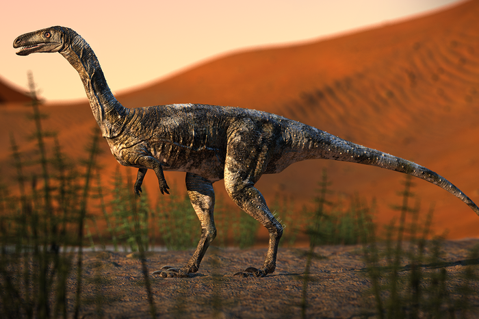

Vespersaurus (do latim, vesper - oeste, saurus - lagarto) é um género de dinossauro terópode cujos representantes viveram há cerca de 90 milhões de anos no sul do Brasil. A espécie-tipo é denominada Vespersaurus paranaensis. O animal era carnívoro e apresentava características únicas, sendo encontrado no Sítio Paleontológico de Cruzeiro do Oeste.
O fóssil foi encontrado no Sítio Paleontológico de Cruzeiro do Oeste. Localizado no município de Cruzeiro do Oeste, no estado do Paraná; o sítio existe desde a década de 1970. Os achados foram analisados por paleontólogos da USP, Universidade Estadual de Maringá (UEM), Museo Argentino de Ciências Naturales e Museu de Paleontologia de Cruzeiro do Oeste. A nova espécie foi denominada Vespersaurus paranaensis, a partir do termo vesper (oeste ou entardecer em latim), em referência ao nome da cidade onde foi descoberta, e por representar o primeiro dinossauro encontrado e descrito no Paraná. A descrição da espécie foi informada à imprensa no dia 26 de junho de 2019 e publicada no periódico científico Scientific Reports, do grupo Nature.
O V. paranaensis media, aproximadamente, 80 cm de altura e 1,6 m de comprimento. Apresentava dieta carnívora, predando pequenos animais. Seu habitat parece ser o de ambientes desérticos, a julgar pelo tipo de rocha da qual seus vestígios foram retirados. Trata-se da oitava espécie de terópode encontrada no Brasil. Dinossauros desse tipo possuem como característica marcante o bipedalismo, isto é, a locomoção por meio do par de pernas traseiro e em sua maioria, especialização à dieta carnívora, embora hajam exceções que reverteram à herbivoria. Outros membros conhecidos da subordem Theropoda no Brasil são Irritator, Gnathovorax, Ypupiara, Mirischia, spectrovenator, Ubirajara, Berthasaura, Thanos, pycnonemossauro - além do Vespersaurus - e, conforme propostas filogenéticas modernas, todas as aves atuais.
A semelhança com os pássaros ainda abrange a provável presença de sacos aéreos e de vértebras escavadas por divertículos respiratórios no V. paranaensis. Tais características conferem leveza aos dinos. O resultado de análises filogenéticas implica a inclusão da espécie na subfamília Noasaurinae, cujos integrantes aparentavam ter habitado somente Argentina e Madagascar, com possíveis registros também na Índia. Isso insinua que tais locais já estiveram unidos entre si e com o Brasil. A consolidação dessa classificação faria que o táxon Vespersaurus paranaensis fosse considerado grupo-irmão do Velocisaurus unicus, uma espécie argentina. A subfamília Noasaurinae consiste em um grupo enigmático de pequenos dinossauros terópodes relativamente raros que viveram em terras então pertencentes a um supercontinente denominado Gondwana, ao longo do Cretáceo Superior, durante a idade Maastrichtiana.
No local onde houve a fossilização do animal encontrado, o Grupo Caiuá, há fósseis escassos, encontrando-se, até pouco tempo, apenas lagartos, quelônios e pterossauros; em contraste com as demais áreas que integram o Supergrupo Bauru, Bacia do Paraná, a qual abrange o centro-sul do território brasileiro. O V. paranaensis foi o primeiro dinossauro descoberto nessa região, pois, ao contrário do que costuma afirmar o senso comum, os pterossauros não são dinossauros - pertencem a um grupo próprio, embora também tenham existido durante a Era Mesozoica.
As estruturas ósseas encontradas (vértebras, bacia, membros e resquícios do crânio) eram abundantes: é o terópode em melhor estado de conservação de toda a Bacia do Bauru descoberto até o momento. Também evidenciam que a espécie possuía uma anatomia única em comparação com os demais integrantes de sua subordem. O grande estreitamento lateral de veios de alguns ossos metatársicos, assim como o formato de lâmina das falanges proximais de dois dos três dedos que tocam o chão, indica a possibilidade de que o V. paranaensis apoiaria seu peso em um único dedo, tal qual os cavalos atuais. No caso do dinossauro, tal dedo seria o médio, ao passo que os equinos possuem apenas um. Dois dedos que rodeavam essa famigerada estrutura central teriam sido utilizados para cortar e raspar, o que explicaria seu formato de lâmina. Por fim, como é típico nos terópodes, um dos dedos - o menor - sequer tocava o chão.
fontes gerais e imagems: https://pt.wikipedia.org/wiki/Vespersaurus